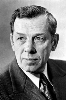

Country:United States, 78 minutes
Spoken languages:
Genres:Sci-Fi, Adventure, Fantasy
Director(s):Curtis Harrington
Writer(s):Curtis Harrington
Video Codec:Unknown
Number: 1379


Certification:
Storyline:
In 2020, after the colonization of the moon, the spaceships Vega, Sirius and Capella are launched from Lunar Station 7. They are to explore Venus under the command of Professor Hartman, but an asteroid collides and explodes Capella. The leader ship Vega stays orbiting and sends the astronauts Kern and Sherman with the robot John to the surface of Venus, but they have problems with communication with Dr. Marsha Evans in Vega. The Sirius lands in Venus and Commander Brendan Lockhart, Andre Ferneau and Hans Walter explore the planet and are attacked by prehistoric animals. They use a vehicle to seek Kern and Sherman while collecting samples from the planet. Meanwhile John helps the two cosmonauts to survive in the hostile land.
Cast: 


Medium: Original DVD,
Comments: Part of: Croczilla + 7 Bonus Movies
Loaned: No
Aspect ratio: Unknown